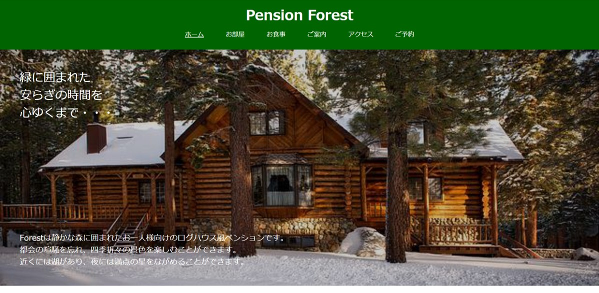
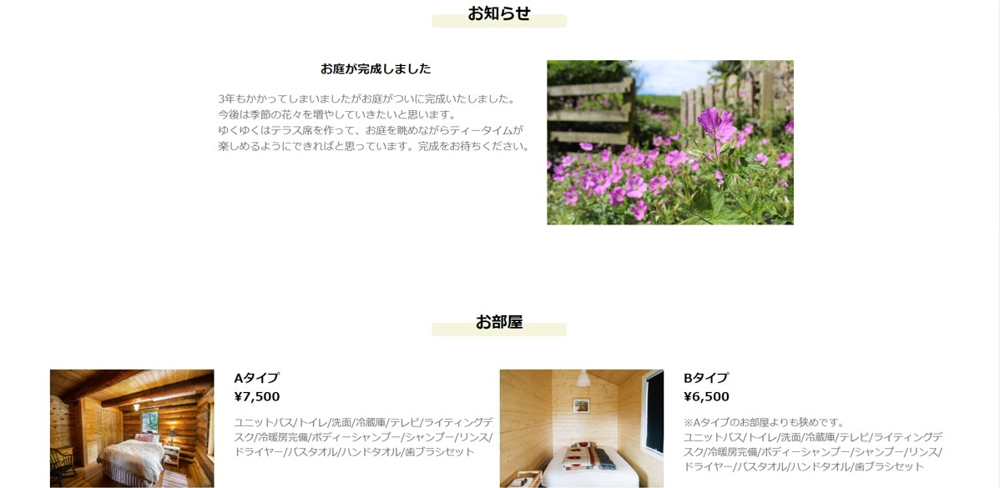
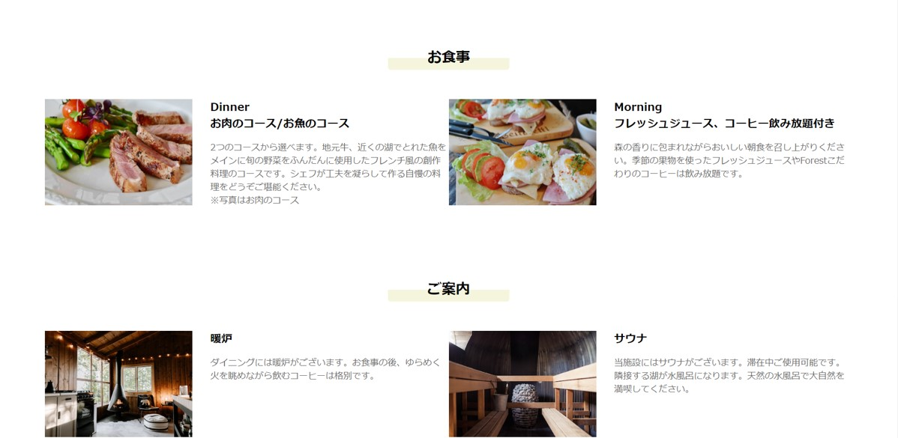
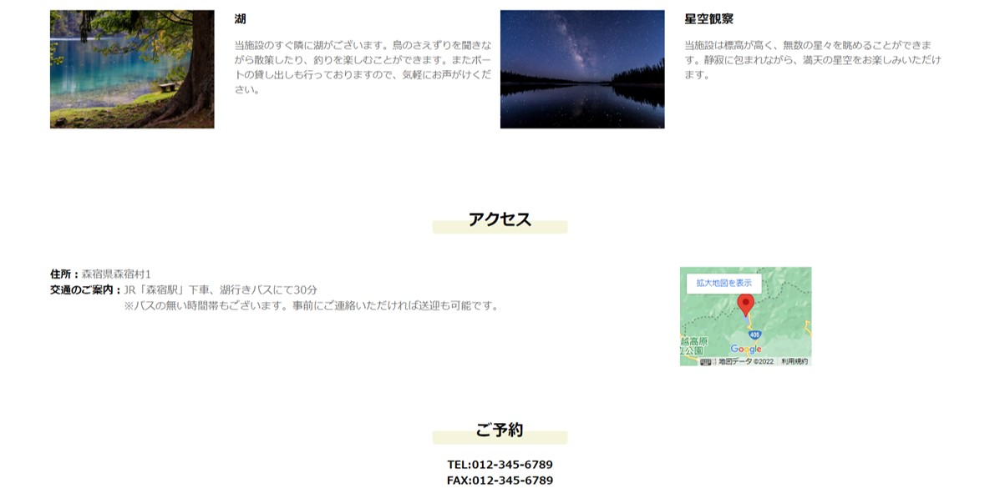
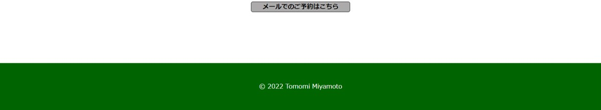

Concept
架空のペンションのサイトです。高原の湖の畔にあるログハウスペンションのサイトで、お客様が部屋や食事などといった宿泊するにあたり必要な情報を知ることができます。
Point
このページのみの作成ですが、お客様が宿選びの際に知りたい情報や施設側のアピールポイントをすっきりとまとめ、他のページを開かずともおおよそのことがわかるように工夫しました。
デザインは森や自然をイメージした色合いにし、Flexレイアウトを使用し見やすさを重視しました。工夫した点としましては、メインビジュアルの白文字が見やすいようbackground-colorを使用したところです。
自分も泊まりたいと思いながら楽しく作ることができました。
Sample





Work information
使用言語/HTML,CSS
作成期間/1週間